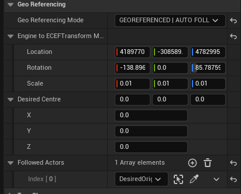

Unreal Engine Georeferencing
To control the position and updating of the Cloud Window in Unreal Engine, open the GeoReferencing section in the trueSKY Actor.
Under “GeoReferencing Mode”, you can activate GEOREFERENCING. If not checked, the trueSKY Cloud Window frame will be equivalent to the Engine Frame. If GEOREFERENCING is checked, the Cloud Window frame will be updated according to the value of the Desired Centre and the position in WGS84 of the Engine Frame. The Desired Centre can be updated manually, via C++ or Blueprint, or by selecting “AUTO FOLLOW ACTORS”, and setting a list of actors to use.
The “Engine to ECEF TRansform Matrix” will need to be set either in C++ or via Blueprints. The required matrix can be obtained from the function “Get Engine To ECEF Matrix” in the TrueSkyGeoReferencing Blueprint function library.
In the Window menu, select “trueSKY World View” to activate a panel that shows the positions of the Engine Frame and Cloud Window on a map of the Earth.